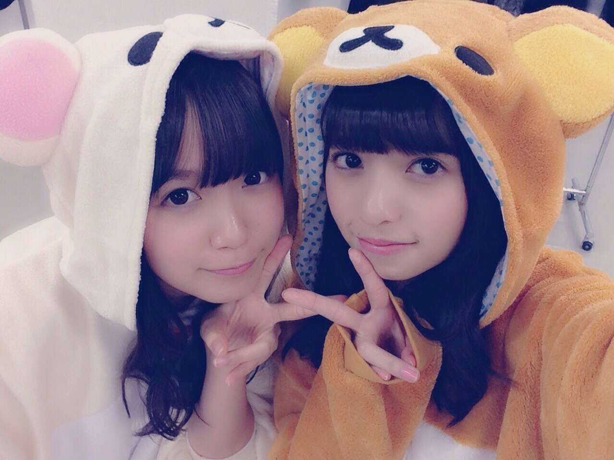
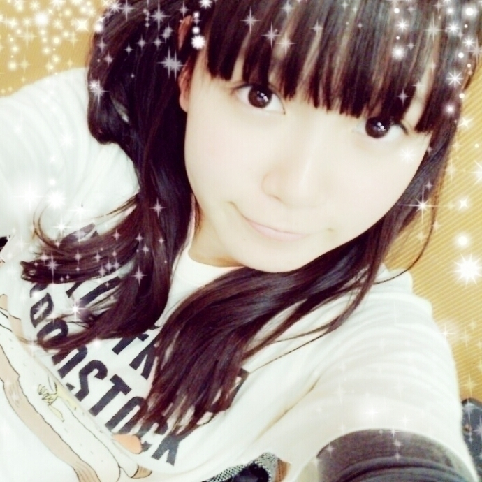

| 2014/12 01 Mon | ひめたん-OoO-その503 |

あすかりんとおそろっちの
着ぐるみお気に入りなんだな(´,,･ω･,,`)
プライベートでいつか
お泊まり会して
夜はこれ着て寝よう
いつかふたりで暮らすのが夢。
月刊エンタメ最新号に
ひめたん載ってます\( ˆoˆ )/
乃木坂ちゃんみんなが
楽曲についてコメントをしたのと、
飛鳥、永島、能條、中元で
お話させていただきました❁
アンダーライブのこととか、色々と。
他にもたくさんのメンバーが
載っているので
ぜひチェックしてください！
B.L.T.
『乃木坂46版｢NOGI CAMERA｣Vol.38』
のカメラマンもやってます！
かなりんとひめたんです( ^o^ )


上目遣いだにゃん
名古屋のスペシャルライブが
終わったので
大阪の時の報告( ˇωˇ )
何度目の青空か？(橋本ポジ)
転がった鐘を鳴らせ！(橋本ポジ)
夏のFree&Easy(深川ポジ)
走れ！Bicycle(橋本ポジ)
制服のマネキン(橋本ポジ)
ガールズルール(白石ポジ)
おいでシャンプー(高山ポジ)
あれ、全部あってるか不安なってきた。
今回は初めてのポジションが多くて
新鮮な気持ちで
ステージに立ちました( ˇωˇ )
ガールズルールのセンターは
アンダーライブで務めたこともあって
今回も選んでいただきました
選抜メンバーもいる中で
私なんかが......大丈夫かなあ......と
不安もありましたが
最後のMCで七瀬に褒めてもらったり
スタッフさんやファンのみなさんからも
よかったよ！って言っていただけて
ほっとしました(´；_；｀)♡
経験が活きたのかなあ
MCパートは昼夜とも
真夏さんとばちばちしてました♡♡
ずっきゅんとびーむは
まだまだ決着が付きませんね( ˇωˇ )
あなたのハートにずっきゅん♡
のぎ天は研究生さん初登場。
みんなでアスレチックしてます
アスレチック\( ˆoˆ )/

たんたん対決は必見だよー☆！

 ひめたんと握手するときは
ひめたんと握手するときは
ちゃんと自己紹介したほうがいいのカナ？
自己紹介( ˇωˇ )！
してくれると嬉しいです♡
ひめたんいつからリボンにハマったのー？
乃木坂入る前から
ちょっと持ってたよ
バレーボールとテニス
どっちが好きですか？
テニスやったことないけれど
「エースを狙え！」好きだったなあ
「アタックNo.1」も好きだったなあ
原作は読んだことないけど
幼い頃にドラマ観てた世代(﹡ƠωƠ﹡)
ひめたんはチョコだったら
ホワイトも普通の茶色いチョコ
どっちが好き？
茶色......ミルクチョコ派。
ホワイトチョコは甘すぎて
んﾞんﾞッてなる(´・ω・｀)
ひめたんはたい焼きは頭からたべる派？
それとも尻尾から派？
頭から食べる派です
そういや最近美味しいたいやき屋さん
見つけたよ～＊
ひめたんはカニクリームコロッケと
クリームコロッケと
どっちが好きですかね、、
カニクリームコロッケは
あんまり好きじゃないのです
カニがあんま好きじゃないの
ひめたんは三度の飯より
サプライズが好きですよね？
サプライズは胃が痛くなるにゃ(´-ω-`)
あ、ごはんも食べるもの気を付けなきゃ
ひめは胃が弱いのね(´-ω-`)
ひめたんの日記の
コメント欄下２ケタに46を踏んだ方へ
手書きでコメ返するコーナー
＼ ひめたん46 ／

いつもたくさんのコメント
ありがとうございます
めーるの返信とか
いっぱい書いてくれてるよね
みんなの全部読んでるよ～＊
コメントたくさんだと
それだけひめのひとりぼっちの時間が
減るから寂しくないんだ( ´•̥ω•̥` )♡
最近はお仕事とライブのリハ
どっちもがんばらなきゃーだからね
気持ちがばたばたしてるの
12月は師走って言うもんね
12月ってなんかうきうきそわそわする
あ！クリスマス近いじゃん♡
みんなクリスマスの過ごし方は
もう計画してるのー？
去年のクリスマスは
さゆと万理華とディナーしたの
楽しかったなあ(＊´v`＊)いい思い出。
「カープ女子」が
流行語大賞トップ10入った！
(＊´・ω・＊)
コメント(1072)
2014/12/01 23:48